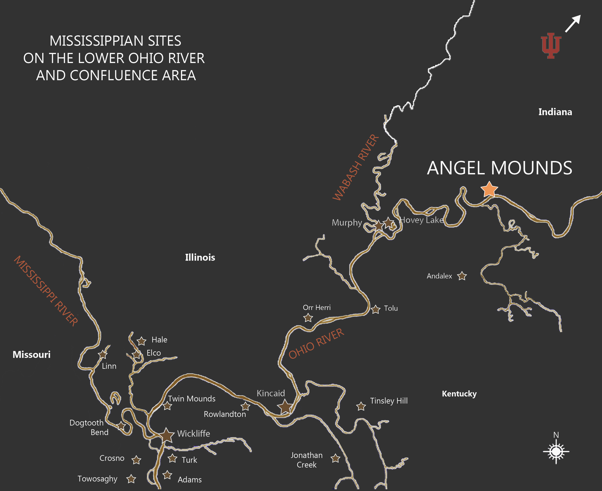

Located on the banks of the Ohio River in southwest Indiana, Angel Mounds State Historic Site is one of the best-preserved Mississippian sites in North America. The site was built and occupied between A.D. 1050 and 1400, and would have supported several thousand residents. “Mississippian†is a term archaeologists use to describe the people who settled along major waterways in the Midwest and Southeast United States during this time. They shared similar cultural items and traits, and they often built large earthen mounds as platforms to elevate important buildings.
The original Angel site included 11 earthen mounds and covered an area of 103 acres. More than a mile of defensive walls known as palisades once extended around the site. Houses were distributed within neighborhoods and were most abundant in the eastern half of the village. Houses were often placed in association with plazas, which are open spaces that may have had ceremonial significance. Angel Mounds operated as a chiefdom, and would have served as an important religious, political, and trade center for people living within the region. 
This interactive exhibit allows you to explore the Angel Mounds site. Discover more images and information about the lifeways of the Mississippian people who lived here by clicking on the colored icons placed around the screen.